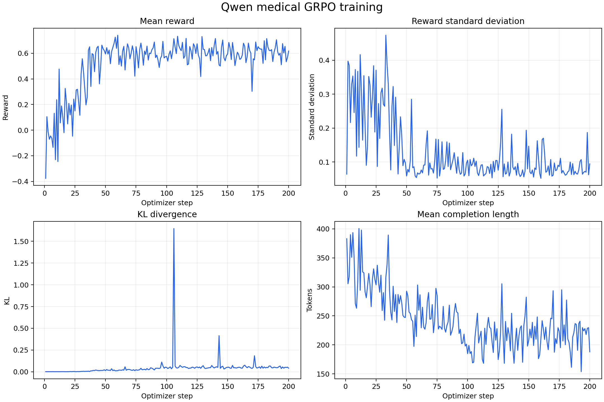

大模型与强化学习
大模型后训练-Qwen2.5-3B医疗知识GRPO强化学习
搭建医学问答后训练流程，以语义、流畅度和标签规则构建复合奖励。
标签完整率 30.3% → 100%
技术实践
- 训练流程： 独立搭建 Qwen2.5-3B-Instruct 医学问答后训练流程，完成数据清洗、对话模板构建、组内采样、奖励计算与策略更新；
- 奖励设计： 使用 CrossEncoder 评估答案与参考答案的语义相似度，以 BioGPT 困惑度衡量文本流畅度，结合推理与答案标签规则构建复合奖励；
- 训练优化： 基于 TRL 与 Unsloth 实现 GRPO 后训练，采用 4-bit 量化 + LoRA 降低显存开销，结合 vLLM 为每道题采样 5 条候选回答，完成 200 步训练；
- 效果评估： 在 198 道留出测试题上对比训练前后输出，推理与答案标签均完整的比例由 30.3% 提升至 100%
198 道留出测试题上的 100% 指推理与答案标签的完整比例。评估同时保留训练前 30.3% 的对照。
项目图片
